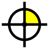

bimkernel · Sistema visual
Guía viva · v0.1Precisión
que se ve.
Las reglas con las que se dibuja toda la serie. Cada pieza de esta página es el componente real, no una imagen.
- Módulo
- 8 px · mayor 40 px
- Tipos
- Inter 100–900 · JetBrains Mono
- Acento
- #FFFF00 · una pieza por dibujo
- Radio
- 4 px · píldora en botones
El origen.

bimkernel
El punto donde todo se coloca. Ejes, círculo de tolerancia y un solo cuadrante amarillo, la pieza que importa. Nombre en monoespaciada con el cursor de terminal amarillo; el botón del menú y el favicon usan la «bk» (bimkernel.com) con el mismo cursor.
Cinco reglas.
Retícula, cotas, marcas de registro y sello de lámina. Todo se puede medir.
Hello Yellow señala la pieza que importa. Si hay dos, ninguna importa.
Cifras tabulares y cero con barra: 0,001 m no se confunde con O,OO1.
Las cubiertas y el origen de la portada se trazan como en un plóter; en las slides, los dibujos aparecen completos. Nada se mueve por adorno; todo se apaga si el sistema pide calma.
Fuente en cada dato, «Inferido» y «Por confirmar» siempre a la vista.
Tinta, papel, señal.
Texto, trazo, fondo de las tarjetas clave
Fondo de todas las láminas
Nunca texto blanco encima; nunca sobre blanco como texto
Contraste sobre blanco: s500 #666 = 5,7:1 (AA en texto) · s400 #8F8F87 = 3,3:1 (solo etiquetas grandes y trazos)
Dos voces.
EPSG 25830.
Titular de tarjeta · Inter 900 · −0,02 em Coordenadas compartidas Texto · Inter 400 · 17 px / 1,65El modelo se queda quieto. Lo que se mueve es el sistema de coordenadas, y esa es toda la idea.
E 440 125,318 N 4 474 318,904 H 667,210 EPSG 25830 θ −1,8721° ± 0,001 m
Cifras tabulares: las columnas cuadran solas.
Todo se mide.
8 px el módulo, 40 px la línea mayor. Portada y fondos de cubiertas.
Marca cada 8 px, cota mayor cada 40 px
Las esquinas de un plano: aparecen al señalar
Artículo · lámina · bloque, arriba a la derecha de cada slide
Piezas.
Cifra + unidad + pie